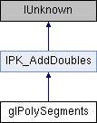

glPolySegments Class Reference
Inheritance diagram for glPolySegments:

Additional Inherited Members | |
 Public Member Functions inherited from IPK_AddDoubles Public Member Functions inherited from IPK_AddDoubles | |
| void | Add (int NumDoubles, double Geo, double Scale) |

Additional Inherited Members | |
| Public Member Functions inherited from IPK_AddDoubles | |
| void | Add (int NumDoubles, double Geo, double Scale) |